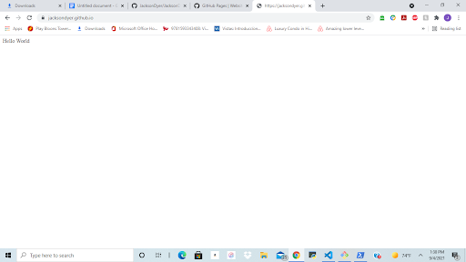

Ahoy! If you're seeing this it means my first project in DigiFab has been at least a marginal sucsess.
My journey began with downloading Visual Studio, and Github and making an account for both. I started to work in the Github terminal and following the directions of professor Dunaway and Bret Lotti, I was able to get the backend of my webpage working!
Baby Steps: My fledgling website says its first words!
My next step was to find a pretty template to use for my website. I might have been able to make something from scratch, but if there was a way I could get a better output with even less work I'd be crazy to not pick that option.
After finding a pretty template, I took the first steps towards having a functioning website: Asking my smarter friends for help. With the help of Kobe Collision and Nick Huge I was able set up the template and start editing the appropriate sections. This is where my creativity started to shine through, and I think my work looked pretty good.
Is my website perfect? Not even close. Am I proud of it? Totally. Maybe all my links dont work, and maybe its copied off an online template, and maybe I was had to ask someone to hold my hand every 5 minutes while working on it, but I made a freakin website that at least at first glance: Doesnt look half bad.
Note To Self: Add "Website Devoloper" to my Linkedin page